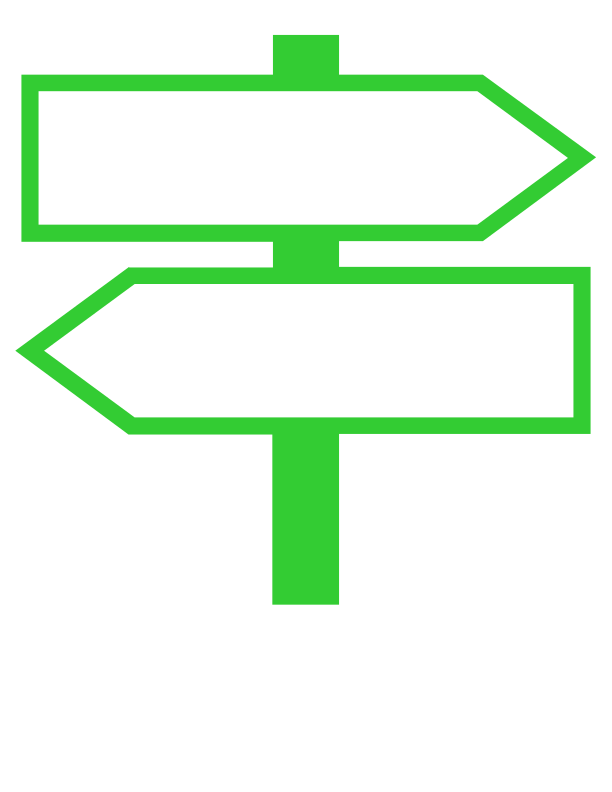
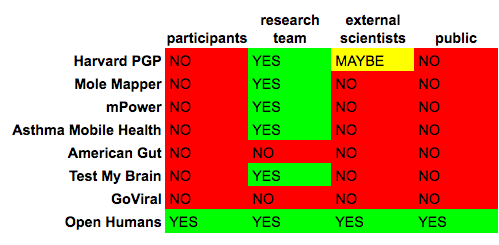

Sharing Guidebook

Participating Studies
We've selected a handful of biomedical research studies and examined how each study is organized in a few key areas, including "equal access", "open science" and "recontact". We summarize the results of this analysis across all studies in the sections below. We also provide a more detailed examination of each individual study, linked from the following list:
Do you want your study listed on this page? Please fill-out this short survey.
Equal Access
Equal access is a model of governance where a research participant and the research team share individual-level research data with each other. Researchers do not have exclusive access and control over data generated in the study, instead data flows in both directions. If you sign-up for study practicing equal access, then you should expect to be able to access your slice of data in the study.
|  | DO practice equal access |
|
 |
DO NOT practice equal access |
Open Science
Sharing study data requires planning and effort. There are governance considerations, platform requirements and operational resources needed to implement sharing that goes beyond the primary research team. We looked at each study and noted any cases where broad sharing of study data is implemented. Specifically, we noted whether any of these 3 groups of people have access to the aggregate study data: (1) participants in the study (2) external researchers and (3) general public.
| participants | external scientists | public | |
|---|---|---|---|
| Harvard PGP | YES | YES | YES |
| mPower | YES | YES | YES |
| ExAC | YES | YES | YES |
| TCRB-OA | YES | YES | YES |
| Asthma | NO | YES | NO |
| American Gut | YES | YES | YES |
| participants | external scientists | public | |
|---|---|---|---|
| Harvard PGP | YES | YES | YES |
| mPower | YES | YES | YES |
| ExAC | YES | YES | YES |
| TCRB-OA | YES | YES | YES |
| Asthma | NO | YES | NO |
| American Gut | YES | YES | YES |
| participants | external scientists | public | |
|---|---|---|---|
| Harvard PGP | YES | YES | YES |
| mPower | YES | YES | YES |
| ExAC | YES | YES | YES |
| TCRB-OA | YES | YES | YES |
| Asthma | NO | YES | NO |
| American Gut | YES | YES | YES |
(re)Contact
The ability for researchers and participants to work together over time can be incredibly valuable to science, especially if discoveries are made or new research questions arise beyond the scope of the initial study. How do studies enable contact with participants?

Works in Progress
DRAFTS FOR REVIEW BY RESEARCH TEAMS: These are partially complete, with feedback needed from the research team:
Appendix
Historical Precedents for Equal Access to Data
Here is a list of biomedical research studies that have pioneered providing participants access to data generated about them in a research study setting.
About GET Labs
The GET Conference is preceded by a uniquely interactive event on April 25th called GET Labs + Expo. At GET Labs, you get the opportunity to experience some of the best participatory health research studies available today. You can advance human health and disease research through direct participation in up to 20 different studies.
Contributors

To the extent possible under law,
Jason Bobe
has waived all copyright and related or neighboring rights to
Sharing Guidebook.
This work is published from:
United States.